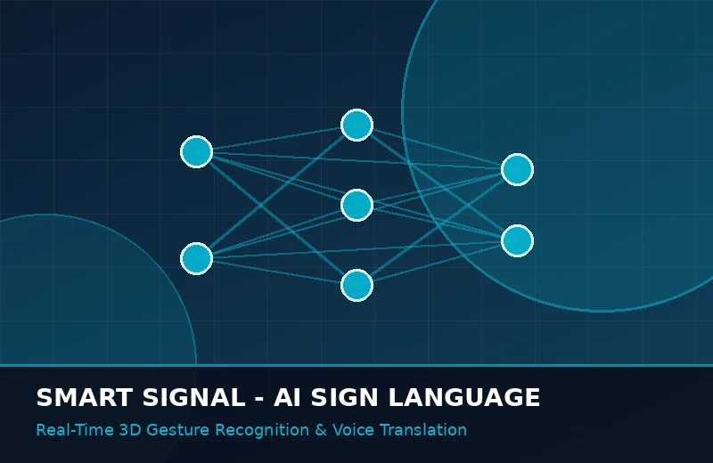

ذكاء اصطناعي ورؤية حاسوبيةتطبيق Smart Signal لترجمة لغة الإشارة
تطبيق ذكي يعتمد على خوارزميات الرؤية الحاسوبية والشبكات العصبية التلافيفية لترجمة حركات اليد ولغة الإشارة في الوقت الفعلي إلى نصوص مكتوبة وكلام منطوق وبالعكس، مما يدمج الصم وضعاف السمع في المجتمع.
98.4% دقة الترجمة الفورية
+85,000 مستخدم نشط